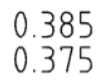

OnshapeWeek5
Week5 Lesson Plan
2D圖紙
- 工程圖紙簡介
- 建立圖紙視圖，尺寸標註，公差，註釋
- 使用格式/模板
- 介紹GTOL / GD＆T
- Views
- Tolerances
Deviation(偏差): This allows you to type in asymmetrical(不對稱的) tolerances. For example, a popular application is shown below, which is like saying, “The nominal dimension is .380”, but if you’re going to be wrong, it can’t be any larger, it can only be less by .005” at the most.”

Limits: This allows you to just type in the limits of the tolerance band(公差帶). This is used when you want to say something like, “I don’t care what this dimension is, as long as it is between .385 and .375, inclusive(包括在內)”

Basic: This strips(剝離) all tolerances away from the dimension, therefore it may only be used in conjunction with(與...一起) a Geometric Dimensioning & Tolerancing (GD&T) Feature Reference Frame. We will discuss GD&T a little bit later but for now, it is important to know it is here. Graphically, the dimension is surrounded by a rectangle:

- View layout
This is good engineering practice; by doing so, we can know how the views are connected. You can think of it as placing the different views of the model on the corresponding faces of the View Cube and unfolding the View Cube to a flat cube layout.
- Projected View
Select the projected view icon and click on the existing other view that you just placed. Then click on the screen just above it (if you hover directly above the existing Right view long enough, a preview of the Top view will show up):
Create a section view, jogged section view, or partial section view(局部剖視圖) of an existing view by placing a cutting plane line (or lines) and specifying a direction and label. Keep in mind that you are unable to create section views from: auxiliary, detail, or other section views. (By Onshape)
- Auxiliary View
Auxiliary views are views which are not aligned with any of the primary(主要) (Front, Right, Top, etc) directions.
Create an auxiliary view; an orthographic view that is folded out 90 degrees from a selected edge in the parent view (usually from a slanted edge). (By Onshape)
- Summary
Let’s take a second to reflect what we learned in this lesson.
1. We learned that you can make Engineering Drawings by selecting “Create drawing…” in the tabs on the bottom of the screen.
2. You can add linear and angular dimensions to your Drawings.
3. You can choose to add projected(投影), section(剖面), or auxiliary(輔助) views to your Drawings.
4. Each dimension has an associated(相關) tolerance, which determines how accurate(準確) your part should be during manufacturing.
5. You can add detailed views and annotations to your Drawings.
6. Geometry Dimensioning and Tolerancing (GD&T) is an advanced drawing methodthat many companies use in their Engineering Drawings.
7. You can also create Assembly Drawings.
Next week, we’re going to start our first major project, the Bluetooth Speaker. Make sure to brush up on everything we’ve learned so far!
Week5 Homework
Week5 Assessment
Q : Which four views are included in the “Four View Layout(四視圖佈局)” in Onshape?
A : Front, Top, Right, Isometric(等角視圖).
Q : What is the difference between a Dimension and a tolerance?
A : The dimension is the nominal (“perfect”) measurement of our geometry, whereas the
tolerance is the acceptable variation(變化) of our geometry allowed during manufacturing.
Q : Name & Describe the following Dimension/Tolerance types:
A : Deviation(偏差) - This communicates the allowable +/- deviation from the nominal dimension(標稱尺寸).
Limits - This communicates the allowable limits of the dimension (the nominal is not shown).
Basic - This has no tolerance, and therefore may only be used when GD&T is utilized to(用來) define the tolerance range.
Q : What is the real-world implication(含義) of changing a standard dimension on an engineering print from “1.750” to “1.75”?
A : It means that we are changing the tolerance to a “looser” one (wider allowable range) as defined by the tolerance block in the drawing format.
Q : Do Onshape drawing views update automatically? Why or why not?
A : No they do not, as this gives the designer control whether they want the drawing to
reflect the latest design or not. It is a form of revision(調整) control, since Onshape does not
have (or need) a formal PDM system.
OnshapeWeek4 << Previous Next >> OnshapeWeek6